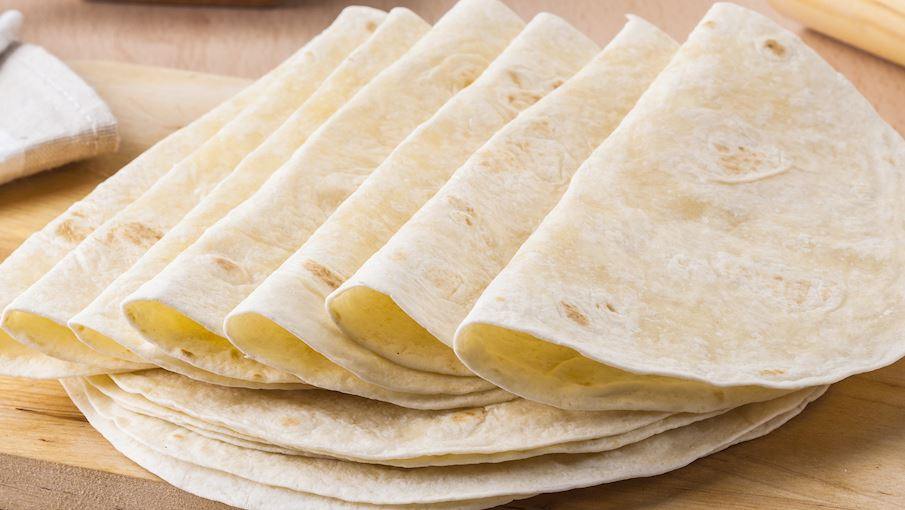

Best Sellers

A British teatime treat, crumpet is a small round bread or cake that is traditionally cooked in a special crumpet ring on a griddle.

This heavy and slightly sweet rye bread is made from a sourdough starter and coarsely ground rye with whole rye berries as its base.

Originally a corn flatbread, one of the essential bread varieties that has been present in Mexican culture for thousands of years.